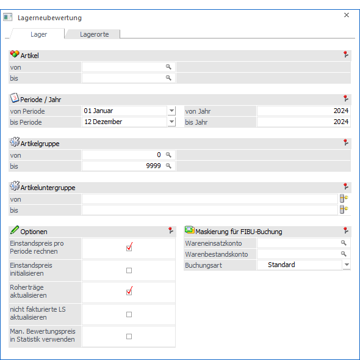
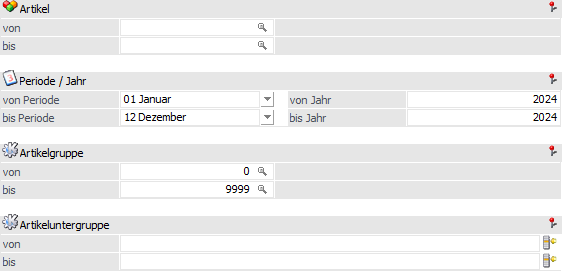
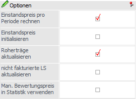
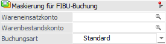

In dem Register "Lager" können alle Lagerwerte neu bewertet und eventuelle Rohertragsänderung in den Kontenstamm übergeben werden.
Hinweis
Eine Lagerneubewertung ist dann sinnvoll, wenn man aufgrund der Gegebenheiten der Branche gezwungen ist Lagerabbuchungen (z.B. Lieferscheine, Fakturen) durchzuführen, ohne den genauen Wert der Artikel zu kennen (weil z.B. die Speditionsrechnung noch nicht da ist, etc.).
In diesem Fall muss für die Bewertung des Abganges der gegenwärtige Einstandspreis herangezogen werden. Stellt sich im Nachhinein heraus, dass der Abgang falsch bewertet wurde, kann mit dem Programm "Lagerneubewertung" die Buchung der Lagerabgänge und des Rohertrages neu aufgerollt werden.

Im Programm "Lagerneubewertung" stehen folgende Selektionen und Einstellungen zur Verfügung:
Selektion

Die Lagerneubewertung kann nach den folgenden Kriterien eingeschränkt werden:
Ø Artikel von / bis
Ø Periode und Jahr von / bis
Ø Artikelgruppe von / bis
Ø Artikeluntergruppe von / bis
Optionen

Die gewählten Einstellungen der folgenden Optionen werden benutzerspezifisch gespeichert.
Ø Einstandspreis pro Periode rechnen
Der Einstandspreis kann wahlweise nach Periode oder über alle Zugänge kumuliert berechnet werden.
Ø Einstandspreis initialisieren
Wenn diese Option aktiviert ist, dann wird der Einstandspreis auf 0 gestellt, wenn der Artikel im Wirtschaftsjahr nie zugebucht wurde und daher aufgrund des Artikeljournals kein Einstandspreis errechnet werden kann. Bleibt diese Option inaktiv, dann wird der letzte Einstandspreis weiterverwendet.
Ø Roherträge aktualisieren
Bei Aktivierung dieser Option, werden die Roherträge nicht nur in der Statistiktabelle, sondern auch im Kontenstamm aktualisiert.
Hinweis
Die Aktualisierung der Roherträge im Kontenstamm kann nachträglich auch über die Kundenumsatzliste (WinLine FAKT - Auswertungen - Kundenumsatzliste - Register "Differenzliste") erfolgen.
Ø nicht fakturierte LS aktualisieren
Wenn diese Option aktiviert wird, so werden in nicht fakturierten Lieferscheinen des neu zu bewerteten Zeitraums…
ü der neu berechnete Einstandspreis wird im Lieferschein aktualisiert, sofern in der Belegzeile die Option "Einstandspreis ändern" nicht aktiviert wurde.
ü der neu berechnete Einstandspreis im Bewertungspreis des Lieferscheins aktualisiert, sofern in der Belegzeile die Optionen "Einstandspreis ändern" und "Bewertungspreis ändern" nicht aktiviert wurden und die Basis für den Bewertungspreis der Einstandspreis ist.
Ø Man. Bewertungspreis in Statistik verwenden
Wenn diese Option aktiviert ist, wird bei der Berechnung des Rohertrags in der Statistik der Beleg geladen und geprüft, ob ein manuell geänderter Bewertungspreis eingetragen ist. Wenn das der Fall ist, wird dieser für die Rohertragsberechnung verwendet.
Maskierung für die FIBU-Buchung

Durch Angabe der entsprechenden Konten bzw. einer Maskierung, sowie der gewünschten Buchungsart, können Änderungen an Lagerwerten an die WinLine FIBU übergeben werden. Hierfür stehen folgende Eingabefelder zur Verfügung:
Ø Wareneinsatzkonto
Ø Warenbestandskonto
Ø Buchungsart
Sind die Felder "Wareneinsatzkonto", "Warenbestandskonto" und "Buchungsart" belegt und wird durch die Lagerneubewertung in einer Periode ein unterschiedlicher Lagerwert errechnet, so wird über die Differenz eine "B-Buchung" erzeugt und in den FIBU-Stapel des aktuellen Monats gestellt. Als Datum wird der erste jener Periode verwendet, in welchem der Lagerwertunterschied aufgetreten ist.